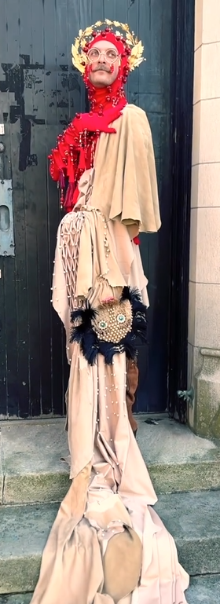
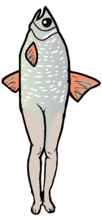

Inspirations
Greedy Peasant
Rusty Lake - Cube Escape: Harvey's Box
Conceptualization
The first sketch for this costume was made in the fall of 2023. The original idea was based on the following questions:
- What if fish could be Catholic?
- What saints would a Catholic fish pray to?
The original idea was inspired by Greedy Peasant's St. Bartholomew costume (see sidebar). I had the idea to attach the halo to the back of my head with snaps sewn onto the cowl. I also wanted to embroider different animals from illuminated manuscripts and Hieronimous Bosch paintings on the tunic and the hem of my skirt. I also wanted to wear yellow rain boots, as I felt that it was a classic part of a fisherman costume.
I'm not sure exactly what material the halo was originally going to be made from, but I believe I intended to hand paint the designs. I also wanted to include fishing lures hanging from the back of it.
One of the things I really wanted to include was the Rusty Lake fish. The fish appears in various forms in different games and short films by the company, but the version I'm particularly fond of is what I call the "Leg Fish" (see sidebar), which appears in a single puzzle in Cube Escape: Harvey's Box. In my initial sketch, my plan was to embroider it on one of the arms of the tunic.
Fabrication Process
In the spring of 2024, I planned to participate in a murder mystery party. The theme of the party was going to be fantasy, so I decided to take the opportunity to create costume parts which I could then re-use for the "Saint Devonian" costume. This resulted in a slight re-design of my ideas (left). I found a pattern for a turtleneck shirt with bishop sleeves and a medieval style cowl, both of which I machine sewed using cotton jersey. I go more into the process of creating these two pieces on the page for the "Nox" costume.